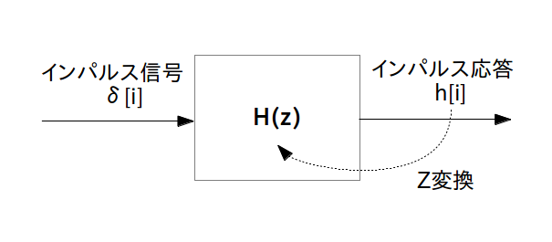

伝達関数 $\textrm{H}(z)$ を求めたら、「既に存在するディジタル線形フィルタの内部構造や状態・性質を調べる」ための次のステップは伝達関数から「ブロック図」を描くことです。その具体的な方法を説明する前に、まずここではブロック図について説明します。
ブロック図(ブロック線図と呼ぶ文献もあり)とはディジタル線形フィルタそのもの、もしくはフィルタの構成パーツを四角や丸や三角などの記号で表し、かつ記号間を矢印で繋いで信号の流れを表した図の事で、フィルタの内部構造を表す設計図となります。なお、
「伝達関数とブロック図は相互変換可能」
であるので逆にブロック図から伝達関数を求めることも可能です。
さて、もっとも基本的なブロック図はディジタル線形フィルタそのものの入出力を表した図で、例えば図1は 「伝達関数 $\textrm{H}(z)$ を持つディジタル線形フィルタに $x[i]$ を入力したら $y[i]$ が出てきた」という意味のブロック図になります。
伝達関数 $\textrm{H}(z)$ を四角で囲むと「伝達関数 $\textrm{H}(z)$ を持つディジタル線形フィルタ」の意味になる。
上の図の意味: 伝達関数 $\textrm{H}(z)$ を持つディジタル線形フィルタに $x[i]$ を入力したら $y[i]$ が出てきた
ちなみにインパルス信号 $\delta[i]$ とインパルス応答 $h[i]$ (と伝達関数)の関係をブロック図で書けば次のように表されます。
